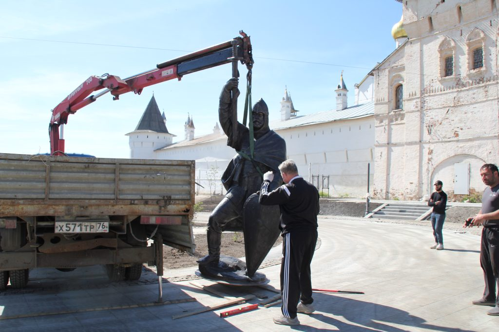

Новости
Интересные новости про Ростов Великий и туризм.
12 июня 2024 - 15:23
В Ростове установили памятник князю Василько
В Ростове, на недавно благоустроенной территории у Кремля, появился памятник князю Василику. Проект благоустройства, реализованный благодаря победе Ростова в конкурсе "Комфортная городская среда", превратил заброшенный участок в современный сквер.
Установка памятника стала завершающим этапом долгожданного проекта. В прошлом году здесь был заложен первый камень, а теперь, на месте, где когда-то стоял скромный памятный знак, возвышается величественная скульптура святого князя.
Князь Василько, потомок легендарного Юрия Долгорукого, родился в Ростове и провел здесь детство. Он был князем Ростовским с восьми лет и прославился своей храбростью и преданностью православной вере.
Князь Василько участвовал во многих военных походах, в том числе в решающей битве с татарами в 1238 году. Он попал в плен и, отказавшись отречься от христианства, был казнен. Тело князя Василько было доставлено в Ростов и похоронено в соборной церкви.
Теперь, спустя столетия, память о князе Василике увековечена в центре Ростова, напоминающая о его подвиге и о богатой истории этого древнего города.
Мы уверены, что "Достопримечательности Ростова Великого" станет для вас ценным ресурсом, который поможет вам определиться с достопримечательностями Ростова, которые вы хотите посетить.
12 июня 2024 - 13:18
Ростов Великий теперь онлайн: новый сайт открывает тайны древнего города!
Мы рады объявить об открытии нашего нового сайта - "Достопримечательности Ростова Великого"!
"Достопримечательности Ростова Великого" - это сайт, на котором главные достопримечательности Ростова Великого собраны в одном месте.
Мы уверены, что "Достопримечательности Ростова Великого" станет для вас ценным ресурсом, который поможет вам определиться с достопримечательностями Ростова, которые вы хотите посетить.